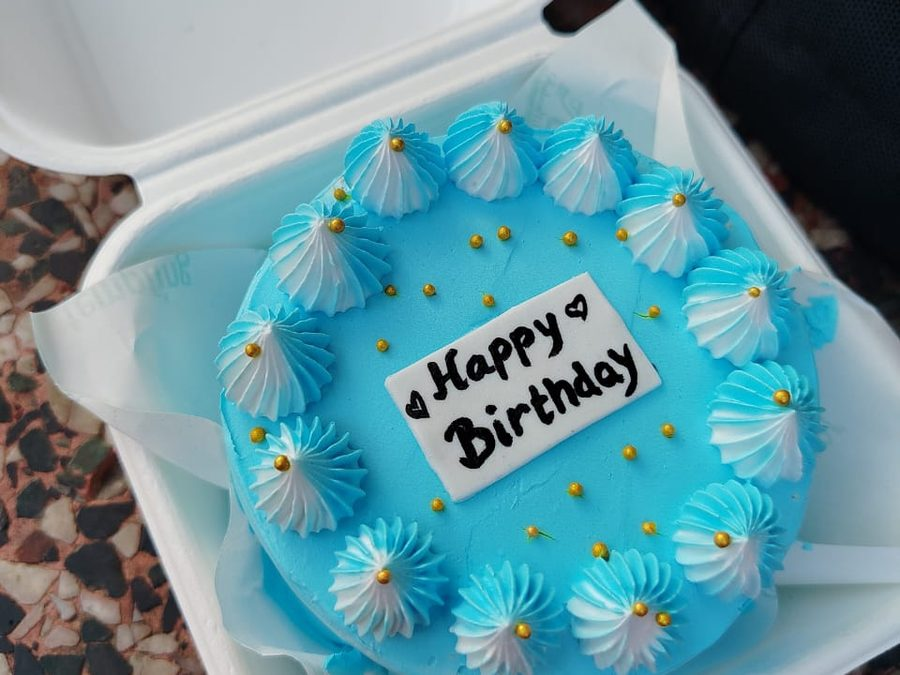
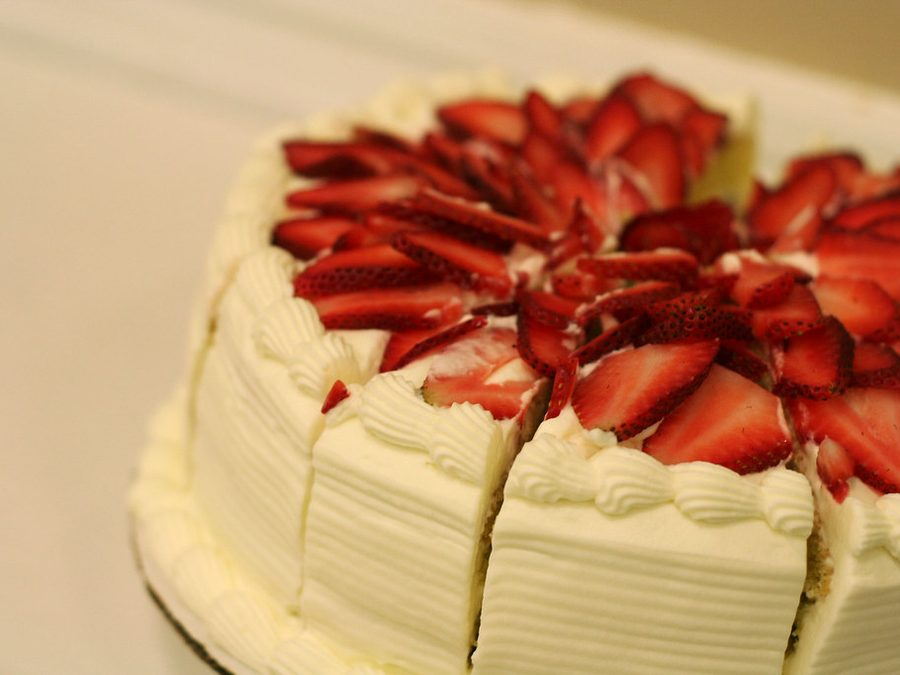

Маленький повод
Небольшая форма, один акцент и личная надпись. Оставьте место для самого праздника.
Собрать десерт для двоих ↗
СВОЙ ТОРТ.Сохраните идею события вместе с пожеланиями к торту. Это ваша заметка, без бронирования даты.
Один десерт для камерного вечера или несколько ярусов для большой компании. Начните с формата, затем выбирайте вкус.
Небольшая форма, один акцент и личная надпись. Оставьте место для самого праздника.
Собрать десерт для двоих ↗Ярусы задают силуэт. Повторяющиеся детали связывают композицию, а отдельный кусочек показывает начинку.
Продумать праздничный торт ↗
03 / Вкус без поводаЯгоды, бисквит и крем. Сначала любимое сочетание, потом декор — ровно столько, сколько хочется.
Начать с клубники ↗В конструкторе можно рассмотреть срез начинки рядом с тортом. Рецепт задаёт слои, декор дополняет их характер.
Выразительный вкус для тех, кто любит насыщенные десерты.
Опера ↗Ягодная свежесть и мягкая текстура классического бисквита.
Фрезье ↗Цитрусовый акцент для лёгкого завершения праздника.
Лимонное облако ↗Выбирайте детали, вращайте модель и сохраняйте свой дизайн, оставаясь на этой странице.
Ориентируйтесь на формат события и композицию. В конструкторе меняйте число ярусов и смотрите, как меняются пропорции. Точный вес и порции при реальном заказе согласовывают с кондитером.
Да. В 3D-композиции рядом с основным тортом показан отдельный кусочек со слоями выбранного рецепта.
Вариант сохраняется в этом браузере. Это демонстрация: сохранение дизайна и добавление в корзину не создают реальный заказ.